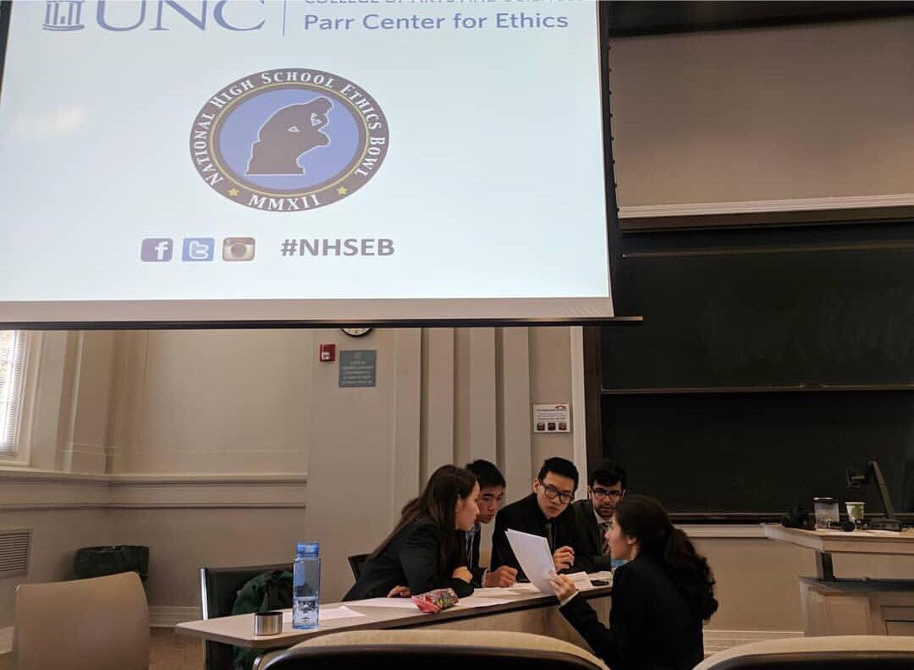

Scroll down to learn more.
We are a club that was originally only competition based--that is, our sole
focus was competing at the Regional and National High School Ethics Bowl every
year. Though this small team format worked well for us, we wanted to expand the
team into a club to get more of our school community engaged in philosophical
discussion, specifically as it pertains to morality. We are proud to announce our
expansion to three branches, beginning in the fall of 2020.
The Ethics Forum comprises a Publication branch, Coordination Affairs branch, and
of course, our Competition branch, which are supervised by Co-Presidents Sarah
Cheyney and Michelle Zhang, as well as Vice President Daniel Lyalin.

Our Publication branch is most interested in the output of engaging content for our
audience as well as facilitating participation in ethical discussion by reviewing
and publishing art and writing submissions from anyone who is interested in
contributing. This bi-annual magazine is coordinated by our Chief Editor, Grace
Chen.
The Coordination Affairs branch seeks to maximize the number of event
opportunities for our team members, and other students who may be interested.
These events include hosting schoolwide panel discussions with special speakers,
hosting recruitment events, and organizing trips to press events such as the PBS Youth
Collective Summit. Members of this branch will work closely with our faculty
advisor, Ms. Hua, to provide these opportunities.
The Competition Branch competes at Columbia University every year at the Regional
High School Ethics Bowl, during the winter. The fall season is spent reviewing
cases, learning about philosophy, and improving eloquent speech. Members work
with our advisor, Steven Alvarez, to strengthen their philosophical background
and critical thinking skills. Upon qualifying for Nationals, our team will spend
approximately one month reviewing cases for the spring National High School
Ethics Bowl, which is hosted at the UNC, in North Carolina.
|
WHAT IS ETHICS BOWL
Discover in detail what Ethics Bowl is, |
MEET THE TEAM Learn about the Stuyvesant's Ethics Bowl team and the people who comprise it. |
ETHICAL INQUIRIES Learn about the Ethical Inquiries (and Where to Find Them) and read some articles. |
|
FEATURED WRITERS
Meet some of the writers of |
CONTACT US Have a complaint, suggestion, or question? Get in touch! |
ADDITIONAL RESOURCES Explore ethics and moral philosophy with these resources. |